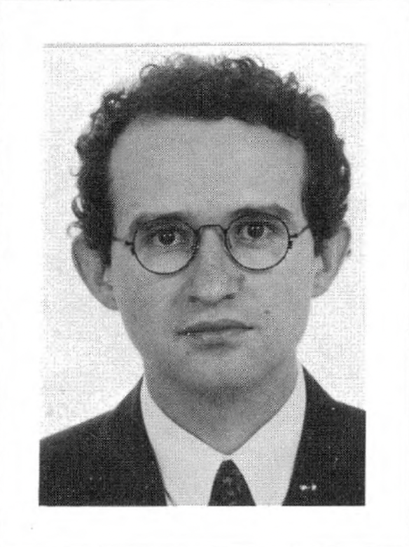

Artur Ribeiro Neto
1963 - September 20, 2010

Biography
Born and raised in São Paulo, Brazil, Artur earned a B.A. in Journalism from the University of São Paulo in 1984. He joined Folha de São Paulo and rose to become Editor of the Editorial Pages. In the late 1980s he came to UCLA for graduate study in Political Science, earning his Ph.D. in 1994 under Professor Barbara Geddes, then his MBA from UCLA Anderson in 1996. He returned to Brazil and worked as a consultant at Booz Allen & Hamilton before joining the Votorantim Group as Executive Director of Votorantim Venture Capital. His most prominent transaction was the 2010 merger of Optiglobe and Proceda to form Tivit. Artur lived at the rare intersection of journalism, political-science scholarship, and finance.
Photos
No additional photos available.
Education
- University of São Paulo (USP) | B.A. | Journalism | 1984
- UCLA | Ph.D. | Political Science | 1994
- UCLA Anderson School of Management | M.B.A. | 1996
Career
- Editor of the Editorial Pages / Political Editor | Folha de São Paulo | Pre-MBA
- Consultant | Booz Allen & Hamilton | Brazil
- Executive Director | Votorantim Group / Votorantim Venture Capital (VVC)
Family
- spouse: Angela Issler Marsiaj — Brazilian writer and novelist; born in Porto Alegre, raised in São Paulo. Author of the novels Soroca and O enigma de todos os tempos (Editora Urutau).
Interests
Travel | The Arts | Sports
Obituary
Not available.
Memorial Legacy
Not available.
Sources
- Exame death notice (Oct 10, 2010)
- Geddes & Ribeiro Neto, 'Institutional Sources of Corruption in Brazil' (1992) — JSTOR
- Geddes & Ribeiro Neto — ResearchGate metadata
- Foreign Affairs review of Corruption and Political Reform in Brazil (1999 book)
- Editora Urutau — author bio for Angela Issler Marsiaj (his widow)
- Barbara Geddes — UCLA Political Science (his dissertation advisor)